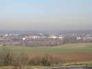
Belleville, première rencontre de 2008 où je sois allé, en indoor (mais avant, il y a eu GrandeSynthe). Départ vendredi, j'ai le temps, il fait très beau, je déjeune sur la colline au-dessus du beau pays de Gisors...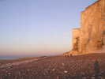
Voilà où c'est, Belleville. Ca ne vous dit rien ? Bon, c'est 5 km au nord de Dieppe, sur la côte normande. Evidemment, c'est en haut de la falaise, à 800 m du bord environ. Pas d'accès direct à la plage, dommage...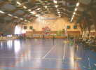
Le gymnase est grand, très vitré, mais toutes les vitres sont masquées par des plastiques noirs en prévision de spectacles, sans doute !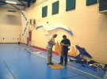
J'ai mis Megoel au mur pour décorer, mais ne croyez pas qu'il ne volera pas ! Thierry prépare les cerfs-volants du kif, le combat indoor.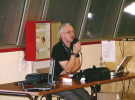
Le combat se prépare. Eric Lincot, le Grand Organisateur (avec tout le Cerf-Volant Club de Dieppe) fait la présentation. En gros, il s'agit d'arracher les queues en papier des cerfs-volants de l'équipe adverse....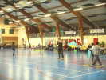
Et le combat s'engage, 2 contre deux, puis 3 contre 3. Ca s'emmêle, ça se démêle, c'est un bonheur !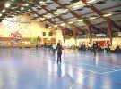
C'est un peu difficile à suivre, mais ça met de l'animation ! Il y a quand même un peu trop de temps morts dans la préparation des équipes. Il faudrait faire une manche, une présentation, une autre manche, etc. pour que les équipes se jettent sur le terrain au top...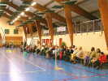
Le samedi, il y a déjà un certain nombre de spectateurs. Le dimanche, il y en aura encore plus. Pourtant, le grand soleil incite plutôt à aller se balader ! Mais nous avons choisi de voler dedans ! (A part un vol de nuit agréable mais frais...).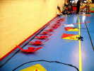
Dans le fond du gymnase, les Raz'Mokets ont sorti tout un attirail de show : des oiseaux, un "dragon", qui ne volent pas vraiment, pendus à des cannes à pêche maniées quelquefois plutôt violemment, mais quel spectacle, moins poétique que l'an dernier, quand même, et avec quelques longueurs...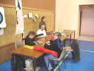
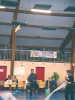
Je suis venu avec plusieurs CVs, le Harfang, la raie Manta et Bambou Bird dont Damien Galibour (pourtant Champion du monde 2 lignes indoor) ne se lasse pas. Au bout de 2 jours, je ne sens plus mes mollets, à force de faire de la marche arrière !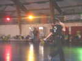
Fabrice Baldan, grand manieur de Révo indoor, fera plusieurs fois son show, en compagnie de Damien, ou seul...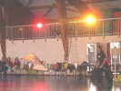
Toutes les figures sont possibles, marche avant, marche arrière, lignes enroulées autour du corps, 2 poignées dans une main ou derrière la tête...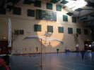
Damien montre tout son talent avec son Synchro gagné au Championnat du monde, son cerf-volant préféré qui permet des manoeuvres à l'extrême ralenti, mais qui nécessite un doigté... de champion !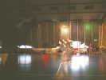
Fabrice et Damien ont produit de concert une présentation que je n'ai jamais vue à un tel niveau de difficulté et de synchronisation... Ils improvisent aussi des numéros à deux ou à trois avec des participants passagers... deux-lignes ou monofils !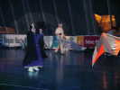
Bruno a fait sa présentation 2-lignes en robe de bure ! Il sera pardonné pour le gros mot lâché en cognant son CV deux fois dans le même fil qui pendait du plafond.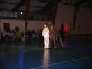
Michel Chantren a modifié son déguisement d'automate jouant du Révo, passant du noir au Pierrot blanc... Astrid qui a le dos esquinté ne peut plus l'amener sur le diable. Mais elle a quand même tenu à présenter son propre numéro, bravo...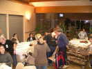
Samedi soir, dîner servi par les charmantes hôtesses du centre, Carole tout à gauche avec le badge et Christelle qui passe la tête à droite...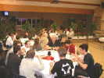
De grandes tables rondes, bien sympathiques : on mélange les vieux et les jeunes, les organisateurs, les débutants et les chevronnés, les expansifs et les réservés...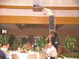
Le projecteur video est resté allumé tout le repas pour projeter des images. Mais on n'a jamais réussi à le brancher, malgré des prouesses acrobatiques... Ah, les standards !Ensuite, vol de nuit à discrétion, dehors pour ceux qui ne craignent pas le froid. Moi, j'ai déjà donné au Weba, je reste au chaud... Avec les projecteurs colorés et le générateur de fumées, l'ambiance est féerique !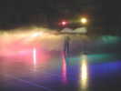
De la fumée, toujours plus de fumée ! Contrairement aux apparences, on peut respirer quand même dedans. Mais le lendemain, j'ai un peu les yeux collés (peut-être pas que par la fumée...)...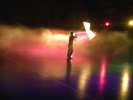
Bon, on laisse Fabrice s'éclater, je vais me coucher dans les salles de squash sur les matelas descendus du grenier. Hélas, quelques énergumènes (peu cervolistes, d'ailleurs) feront encore du tapage exprès jusqu'à 5 h du matin, la nuit sera peu réparatrice, le dimanche soir, j'ai dormi 11 h et demie de suite !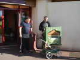
Carole a ramené son orgue de barbarie ! Un petit concert dehors, avec ouverture des entrailles pour montrer le fonctionnement interne : Manivelle, bielle, soufflet, régulateur-réservoir, tuyaux, règle des touches, etc, je sais tout !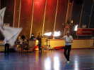
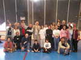
Pour finir, pas de classement, c'était juste pour le plaisir, donc pas de distribution des prix, mais juste plein de cadeaux pour les participants. Et la photo de groupe, bien sûr, elle vaudra cher en 2050 ! Les cervolistes indiquent la direction du vent !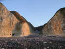
Au soir, je descends quand même (en voiture, c'est pas à côté !) au bord de la mer ! La circulation au bas de la valleuse est réservée aux riverains (?!!), mais j'ai pris le risque...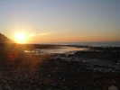
J'aurai droit à un beau coucher de soleil... Mais finalement, j'irai dormir à Criel pour faire un peu de tourisme le Lundi matin. Mais pas de photos, ma batterie était vide ! Partie remise pour le Mans/Coulaines (15/16 mars)...